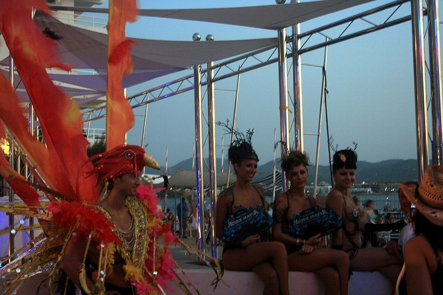

Pacha lands at Ivy this New Years Eve



Earlier this month ITM brought you the news that clubbing mega-brand Pacha would be moving to a brand new venue for its annual New Years Eve party in Sydney, and it’s now been revealed the glamorous Ivy will be playing host to the festivities when we’re crossing over into 2010.
The organisers say the venue will receive the proper ‘Pacha treatment’ for the party, taking over eight of the venue’s different spaces including the Terrace, Ballroom, Changeroom and Sun Room, with Pacha’s famous Ibiza dancers flown in especially from Europe! It’ll be the first of a series of high-profile club events to take place at Ivy during the summer, with three separate large-scale events set to shake the foundations during the Australian Day long weekend alone.
Pacha debuts at Ivy this New Years Eve, stay tuned to ITM for the massive first-round lineup announcement later this week!